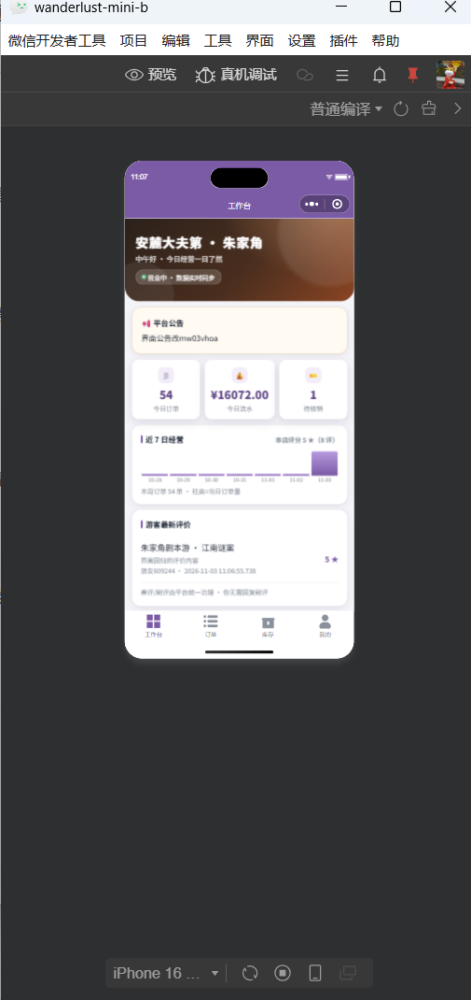

模拟器画面放大 · 图文教程
基于 2026-11-03 你的实际窗口截图（wanderlust-mini-b）标注 · 截图即你当时的界面原样
先说结论：你这个窗口是「模拟器居中」布局——没有编辑器面板、没有可拖分隔条、「界面」菜单里只有
编辑器 / 调试器 两项（没有模拟器开关）、底部工具栏也没有「独立窗口」按钮（我此前凭印象说的，对着你的截图逐一核对后确认没有，向你道歉）。
所以画面大小只有两个杠杆：机型 × 比例（你已找到），外加一个系统级的兜底办法。
方法一：换大屏机型（你已在用，拉满即可）
已验证点击模拟器
下方工具栏左侧的机型下拉框（你截图里是「iPhone 16 …」），
在列表里选
屏幕最大的机型（带 Pro Max / Plus / Ultra 字样的，或 iPad 系）。边框大了，画面自然大。
有效

① 机型下拉框（点这里换大屏机型）
标注基于你的原图：红框 = 机型下拉框的位置。
方法二：调比例（你已在用）
已验证你已经找到了比例设置（跟在机型后面调）。把它拉到允许的最大档位即可。注意：比例放大会等比缩放整块模拟画面，拉太大文字会轻微发虚，一般 ≤150% 观感最好。有效
方法三：关于「独立窗口」按钮——别再找了，你这版没有
已核对我把你截图里工具栏机型下拉框右侧的 4 个图标逐一放大核对过，从左到右是：
刷新 ↻、
圆形图标（回到首页/主页类）、
手机轮廓（真机相关）、
四格窗口图标。
之前我说最右边那个是「独立窗口」，
这个判断是错的——四格图标是窗口布局类功能，点了不会把模拟器单独弹成一个可最大化的窗口。此路在你这版不通，
无效
② 这 4 个图标：刷新 / 圆形 / 手机 / 四格——都不是「独立窗口」
同理，「界面」菜单里只有 编辑器、调试器 两项；「视图」菜单不存在。已全部按你的截图核实。
方法四：Windows 系统缩放（比例拉满之后唯一还能更大的官方途径）
推荐
Win + I 打开设置 →
系统 → 屏幕 → 缩放，从 100%/125% 改成
150%。
整个开发者工具窗口（含模拟器）一起等比放大，
清晰度无损，演示完改回来即可，全程 10 秒。
有效
适合「要投屏 / 给客户看」的场景；日常开发不必动它。
一页速查
| 想要的效果 | 做法 | 状态 |
|---|
| 日常看页面细节 | 机型选最大 + 比例拉到 ≤150% | ✓ 你已在用 |
| 比例拉满还想更大 | Windows 系统缩放 150% | ✓ 兜底 |
| 拖分隔条 / 独立窗口 / 界面菜单开关 | 你的布局与版本均不支持 | ✗ 已排除 |
| 最大最真实的演示 | 真机预览（画面跑在手机上） | mini-b 测试号无权限；mini-a 待修 preview 编译报错 |
教程所用截图：图0 = 扫码核销页窗口 · 图1 = 工作台窗口（均为你 2026-11-03 的原始截图）